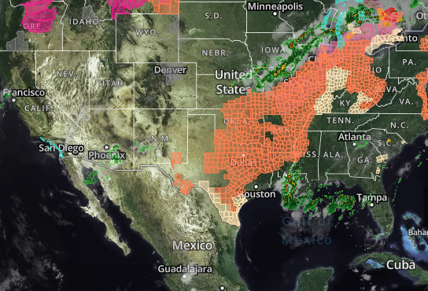

Réflectivité
Elle permet notamment d'estimer l'intensité des échos de précipitations.
STORMLAB • OBSERVATION
Le radar météorologique permet d'observer les précipitations et d'analyser la structure de nombreux systèmes orageux.

RADAR MÉTÉOROLOGIQUE
Les radars météorologiques permettent notamment de détecter les précipitations et de suivre leur déplacement.
01 • LECTURE
Elle permet notamment d'estimer l'intensité des échos de précipitations.
Les palettes utilisées permettent de représenter différentes intensités.
L'animation des images permet de suivre le déplacement des cellules.
Certaines structures radar peuvent aider à identifier des phénomènes organisés.
02 • ANALYSE
Une image radar doit être interprétée avec d'autres informations météorologiques. Elle ne permet pas à elle seule de déterminer tous les phénomènes présents au sol.
🛰️ Découvrir les satellitesSTORMLAB
Observer avant de poursuivre la tempête.
🚗 Storm Chasing